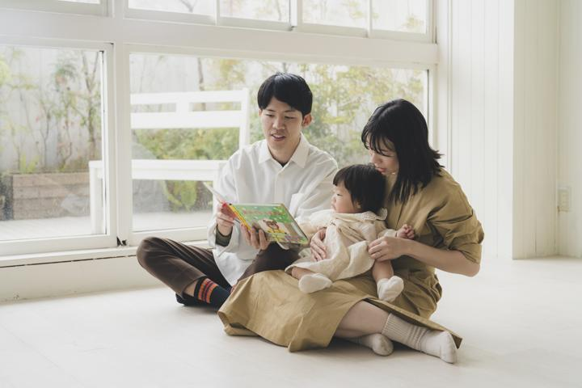
参考：茜音のときF1
家族で座ってる写真
最優先- A. 床に並んで座る：パパのあぐらに茜音、ママのひざに佳純。全員カメラ目線の1枚を最初に。少し引いて白い床を広く入れる
- B. 椅子を使う：木の椅子にママが座って佳純をひざに、横に茜音、後ろにパパが立つ（高さに差が出てまとまります）
- C. 寄り：顔を近づけて佳純を囲む（茜音のときの の寄り）
目線は、カメラの真上でママかパパの片方が呼びかけると揃いやすいです
この順番どおりに進めれば、撮りたいショットが全部そろう段取りにしています
時間は目安です。佳純がぐずったら、②の「抱っこ」（S5）か休憩に飛んで立て直します。
いちばん大事なパートです。全員の機嫌がいいうちに撮りきります。

参考：茜音のとき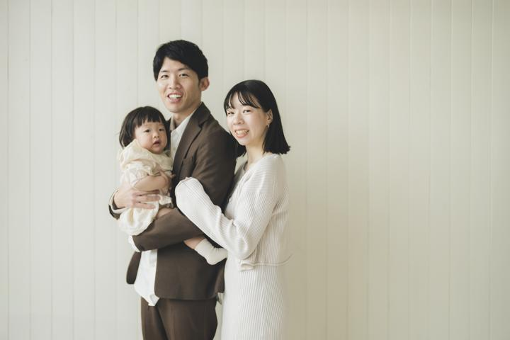
参考：茜音のとき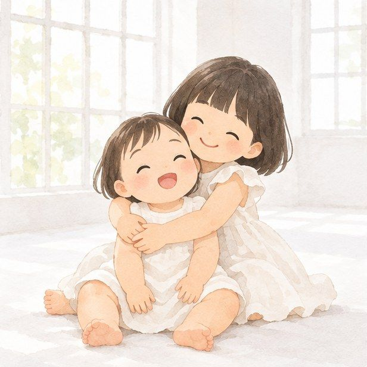
イメージ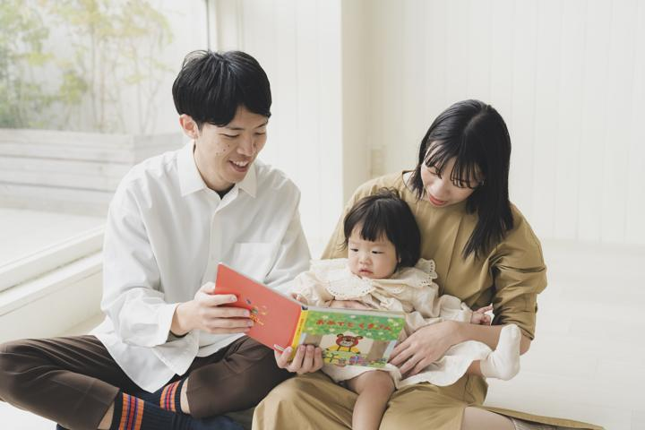
参考：茜音のとき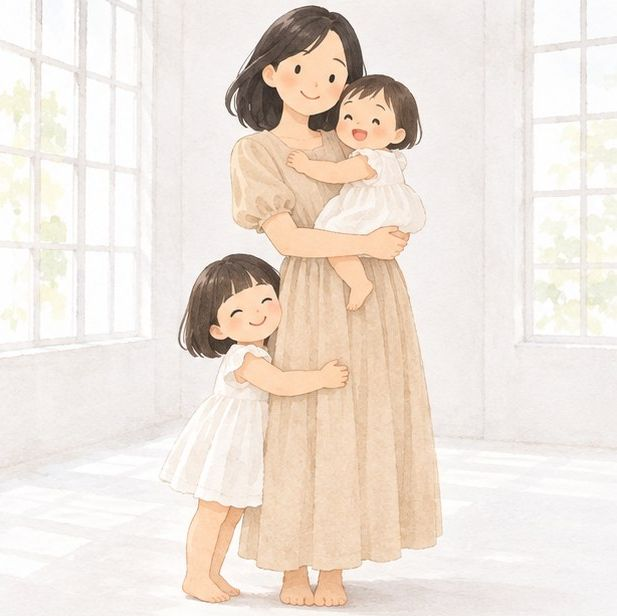
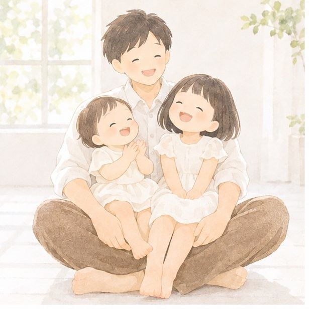
イメージ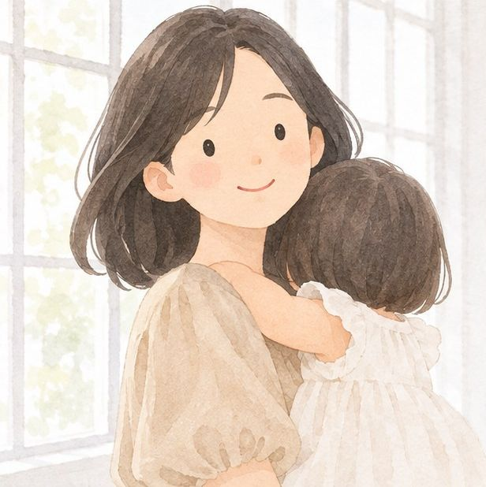
イメージ集中力が続く順に並べています。カメラの後ろで、茜音とパパが盛り上げ役です。
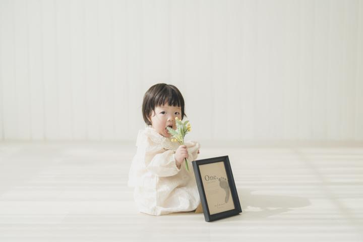
参考：茜音のとき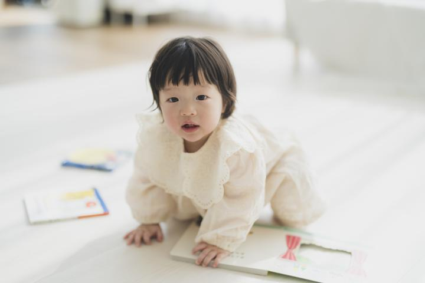
参考：茜音のとき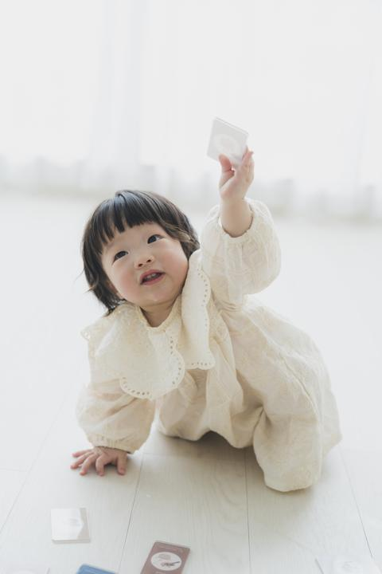
参考：茜音のとき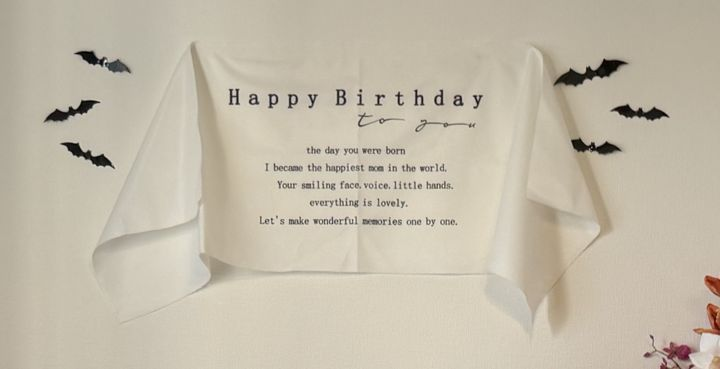
使うタペストリー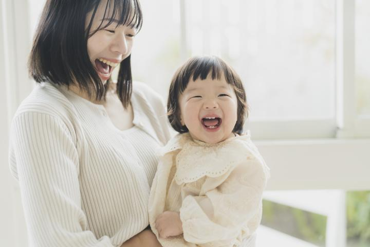
参考：茜音のとき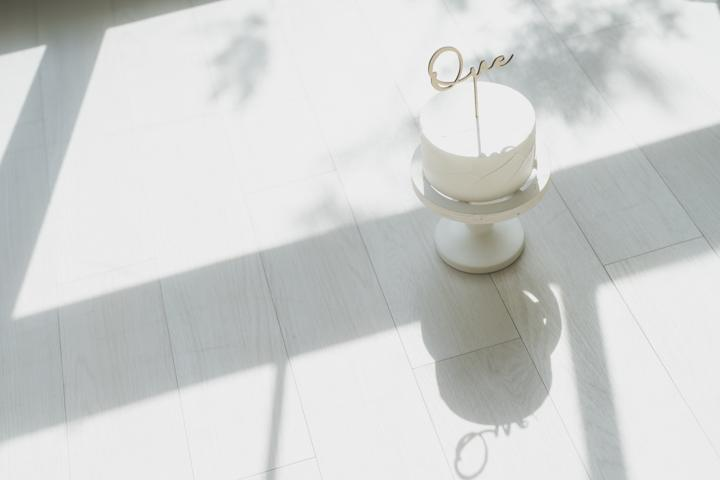
参考：茜音のとき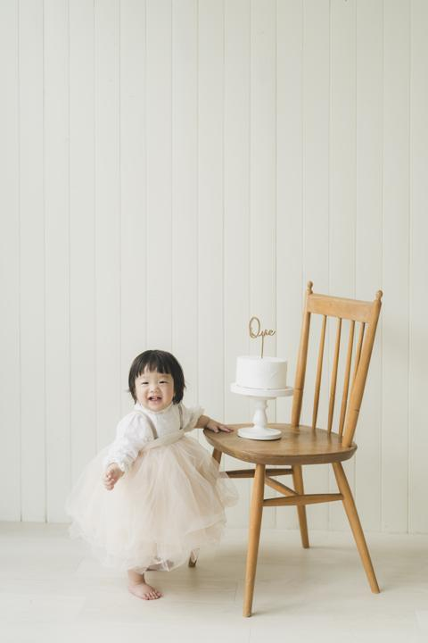
参考：茜音のとき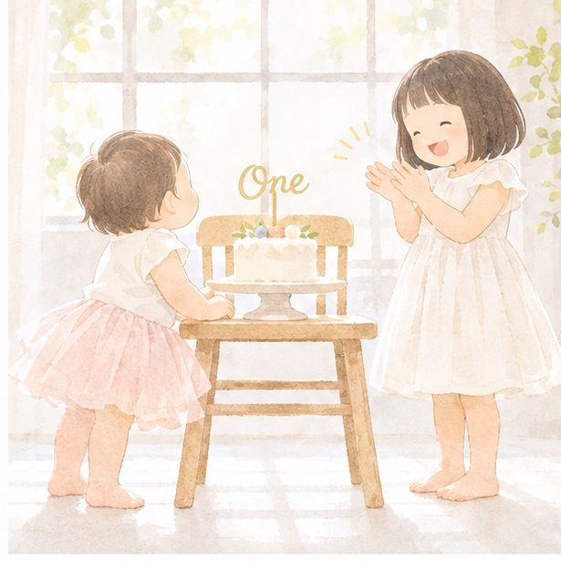
イメージ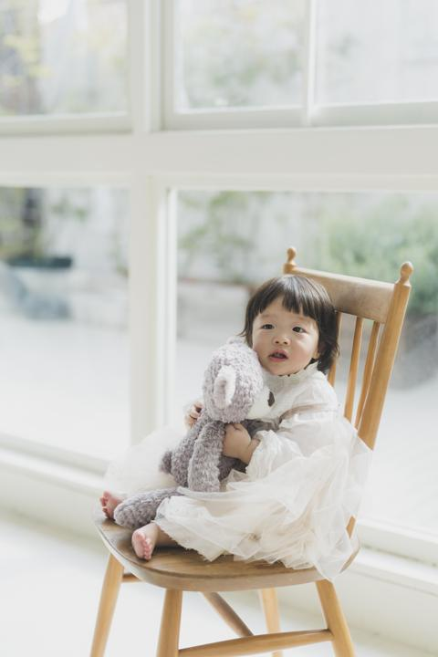
参考：茜音のときハロウィン生まれの佳純だけの特別カット。最後のパートなので短く撮りきります。
HALLOWEEN 壁掛けコウモリのステッカー黒いガーゼ布黒いテーブルクロスかぼちゃ（大・小）おばけのぬいぐるみキャンディのクッション花のアレンジドライフラワー骸骨
ステッカーやテープを壁に貼ってよいか、スタジオに確認しておくと安心です
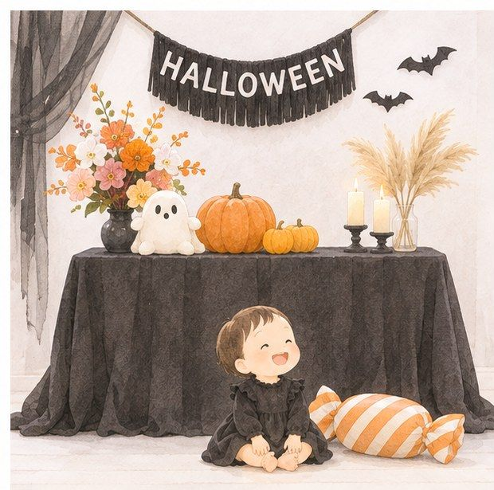
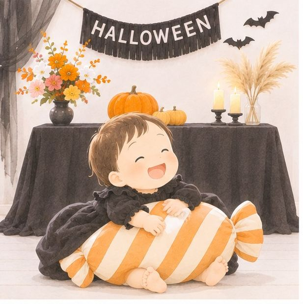
イメージ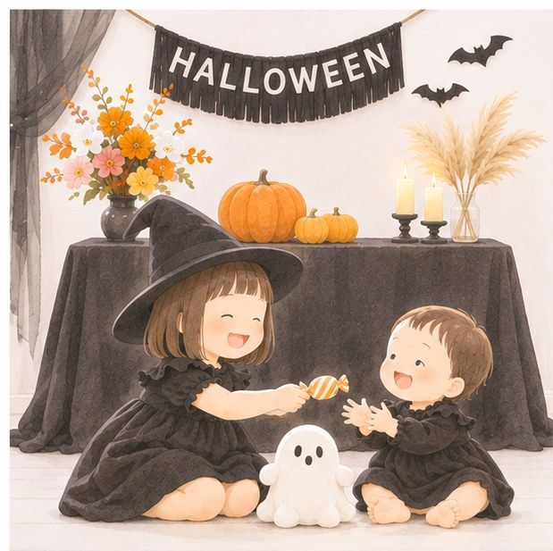
イメージ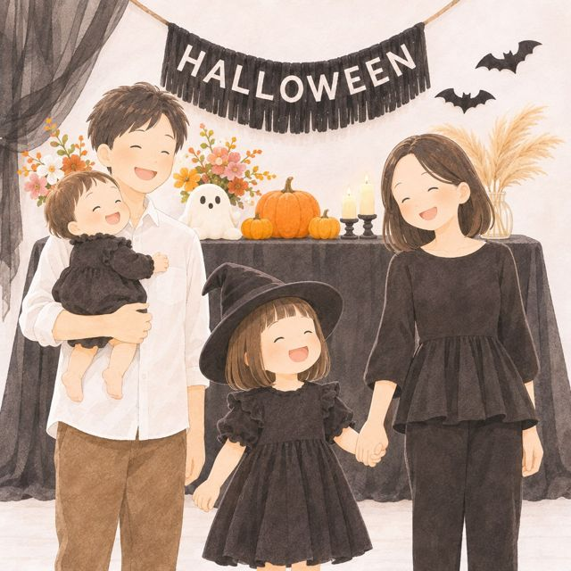
イメージ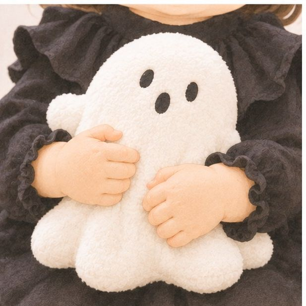
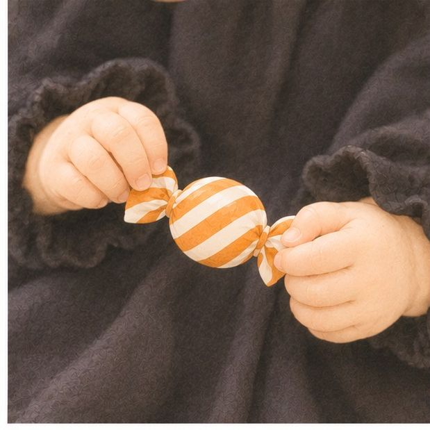
イメージF1〜F3 で時間が余ったら、または撮影の合間に。上から順におすすめです。
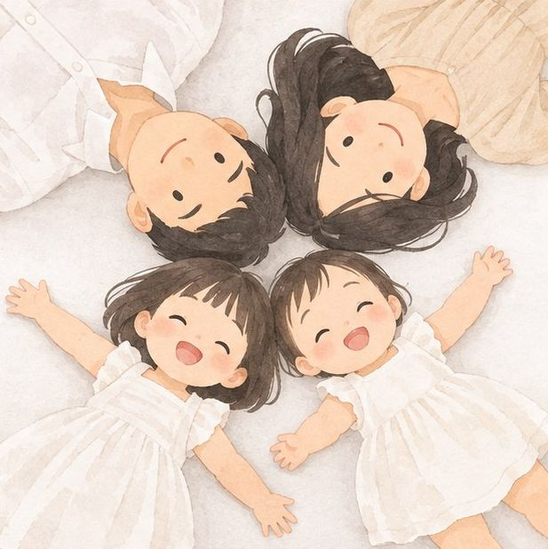
4人が床に寝転んで頭を真ん中に寄せ、カメラマンさんは脚立か椅子の上から。1歳でもじっとしなくていいので撮りやすい構図です。
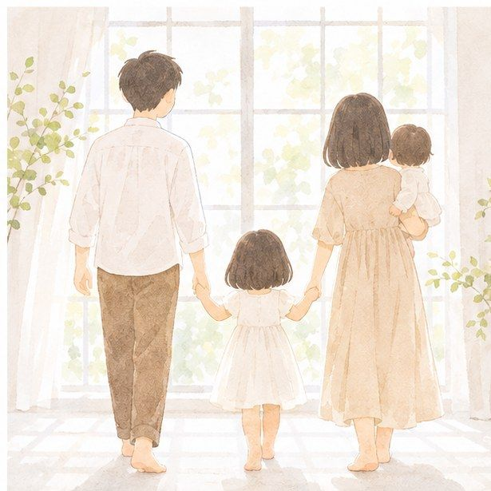
パパ・茜音・ママで手をつなぎ、ママは佳純を抱っこ。顔が写らなくても家族の雰囲気が残る1枚です。
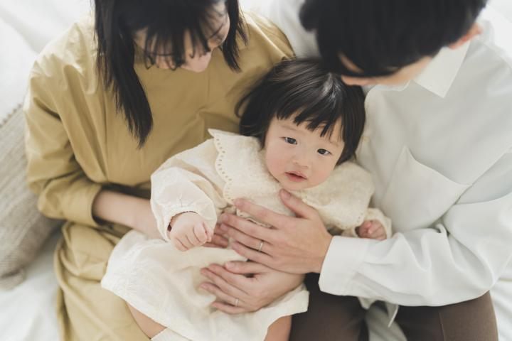
4人の顔を寄せて胸から上だけ。茜音を真ん中に入れると、お姉ちゃんが主役になれる1枚にもなります。
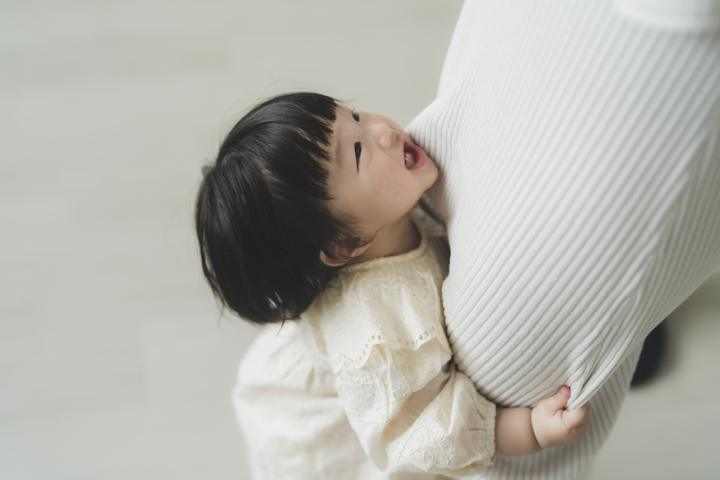
パパの脚に抱きつく佳純を低い位置から。茜音も反対側の脚にくっつけば姉妹版になります（）。
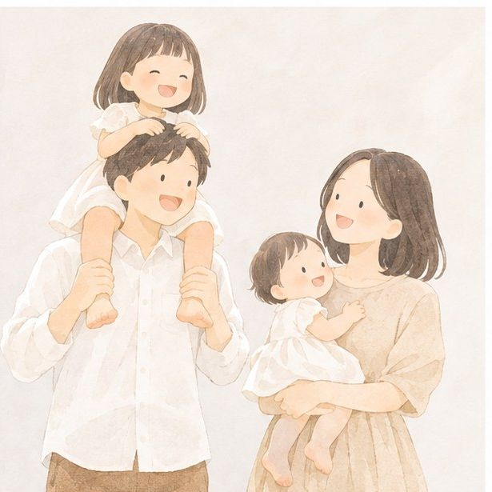
パパが茜音を肩車、ママが佳純を抱っこ。高さに差が出て、動きのある楽しい1枚になります。